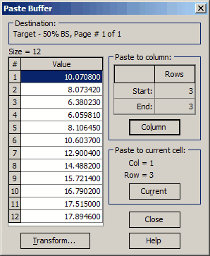

Paste buffer
Paste Buffer
The Paste Buffer in OptiLayer contains the data that was imported using the menu command Import (F9). (see Text Data Import). This imported data is displayed in the Paste Buffer before you transfer it to the spreadsheet being edited. When transferring the imported data to the spreadsheet, you have the option to enter either one value into a current cell, or you can paste the entire column of data from the Paste Buffer into the spreadsheet. This allows you to easily move the imported data into your OptiLayer data file and integrate it into your design process.

The Transform button in OptiLayer allows you to apply a Transform function to the data in the Paste Buffer before performing the actual paste operation. This feature is useful for making simple transformations on the imported data before transferring it to your OptiLayer project. When transferring data from the Paste Buffer to the target file, the process always starts with the highlighted data value in the data column of the Paste Buffer. There are several options available for transferring data from the Paste Buffer to the target file.
To transfer all values that follow the highlighted value, press the Column button in the Paste Buffer. If there are more data values in the Paste Buffer than there are rows in the target data file, only the values required to fill the available rows in the target file will be transferred. This will be indicated by the data column in the Paste Buffer not being marked as <EMPTY> after the paste operation.
If you only want to transfer values from the Paste Buffer to a selected group of rows in the target file, you can mark the rows in the target file with the F7 key before transferring the data from the Paste Buffer. Then press the Column button in the Paste Buffer.
You can transfer a single value from the Paste Buffer to a single row in a specific column of the target file by pressing the Current button in the Paste Buffer window. Before performing the paste operation, make sure to select the cell in the target file where the value from the Paste Buffer will be transferred.
Note that the destination rows and columns of the target file are indicated in the respective information fields in the Paste Buffer window. If there is no spreadsheet open for editing, the Column and Current buttons in the Paste Buffer window will be disabled.